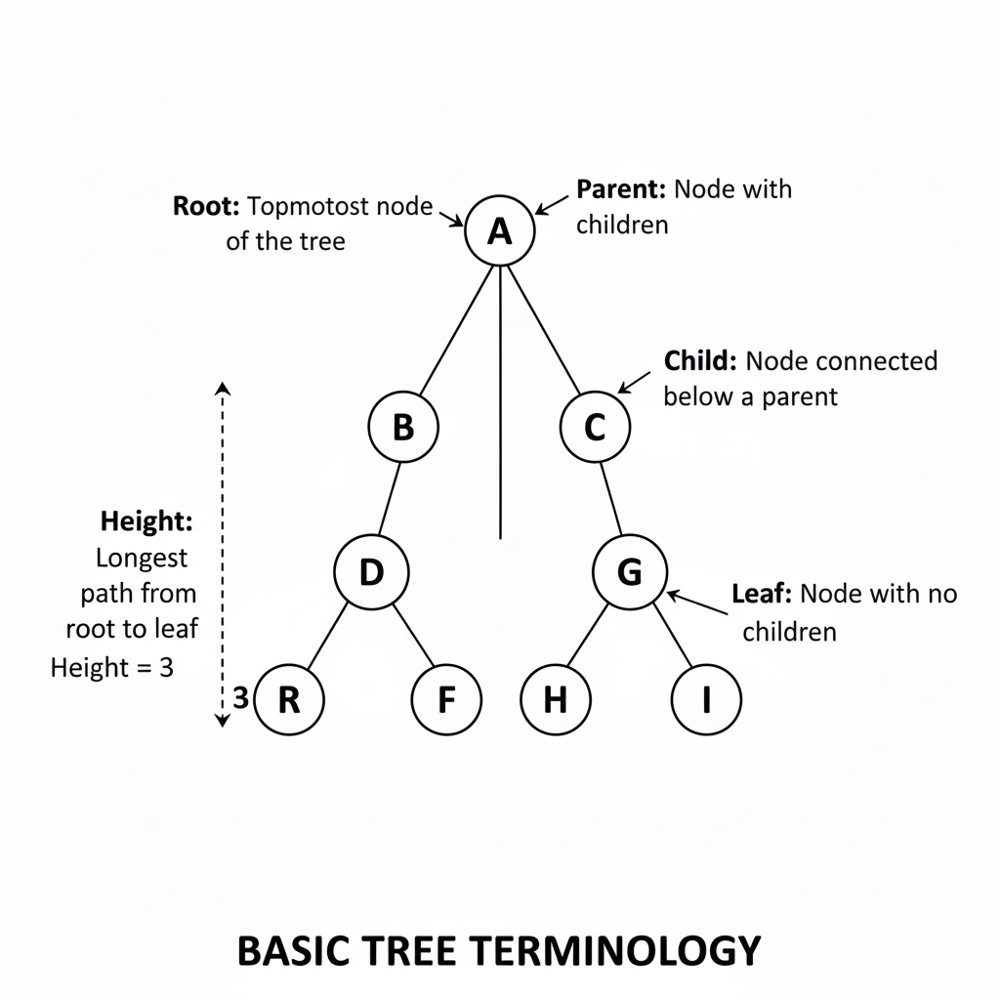

🌳 Trees
A tree is a hierarchical data structure made up of nodes connected by edges. It starts from a root node and expands into child nodes, forming a parent-child relationship.
Why Trees are Important
- Represent hierarchical data like file systems
- Used in databases and indexing
- Foundation for advanced structures
- Very common in interviews
Basic Tree Terminology
- Root: Topmost node of the tree
- Parent: Node with children
- Child: Node connected below a parent
- Leaf: Node with no children
- Height: Longest path from root to leaf

Types of Trees
Binary Tree
A Binary Tree is a tree data structure in which each node can have at most two children, referred to as the left child and the right child. There is no restriction on the order or values of the nodes. Binary Trees are the foundation for many advanced tree structures.
Binary Search Tree (BST)
A Binary Search Tree is a special type of Binary Tree that follows an ordering property. For every node, all values in the left subtree are smaller than the node’s value, and all values in the right subtree are larger. This property allows efficient searching, insertion, and deletion operations.
Balanced Binary Tree
A Balanced Binary Tree is a Binary Tree where the height difference between the left and right subtrees of any node is minimal. This balance ensures that operations like search, insert, and delete take logarithmic time, making the tree efficient. Examples include AVL Trees and Red-Black Trees.
Full Binary Tree
A Full Binary Tree is a tree in which every node has either exactly two children or no children at all. This means no node has only one child. Full Binary Trees are often used to analyze theoretical properties of tree structures.
Complete Binary Tree
A Complete Binary Tree is a Binary Tree in which all levels are completely filled except possibly the last level. The nodes in the last level are filled from left to right. This structure is commonly used in Heap data structures.
Tree Traversals – Types & Time Complexity
Tree traversal algorithms visit every node in a specific order. Traversals are fundamental for solving most tree problems.
| Traversal | Order | Explanation | Time Complexity |
|---|---|---|---|
| Inorder | Left → Root → Right | Visits nodes in sorted order for BST. | O(n) |
| Preorder | Root → Left → Right | Useful for copying or serializing trees. | O(n) |
| Postorder | Left → Right → Root | Used for deleting trees or evaluating expressions. | O(n) |
| Level Order | Level by level | Uses a queue to traverse breadth-wise. | O(n) |
Time Complexity
- Traversal: O(n)
- Search in BST: O(log n) (average)
- Search in skewed tree: O(n)
Common Tree Problems
- Height of a tree
- Diameter of a tree
- Check if trees are identical
- Lowest Common Ancestor (LCA)
- Invert a binary tree
Tree Algorithms – Code & Time Complexity Calculation
Tree algorithms operate on hierarchical data structures. Time complexity depends on the number of nodes n and how the tree is structured (balanced or skewed).
| Algorithm & Code | Explanation & Time Complexity |
|---|---|
Height of Binary Tree
height(node) {
|
Recursively computes height of left and right subtrees. Each node is visited once. Time Complexity: O(n) Space Complexity: O(h), where h is tree height |
Search in Binary Search Tree (BST)
search(node, key) {
|
Uses BST property to eliminate half of the tree at each step. Balanced BST reduces height logarithmically. Average: O(log n) Worst (skewed tree): O(n) |
Diameter of Binary Tree
diameter(node) {
|
Computes longest path between any two nodes. Each node is processed once using optimized approach. Time Complexity: O(n) Space Complexity: O(h) |
Lowest Common Ancestor (LCA)
LCA(root, p, q) {
|
Traverses tree recursively to find split point. Each node is visited once. Time Complexity: O(n) Space Complexity: O(h) |
Trees in Interviews
Interviewers test recursion understanding, traversal logic, and time-space analysis. Clear explanation matters as much as code.
Practice tree problems to gain confidence and improve problem-solving skills.